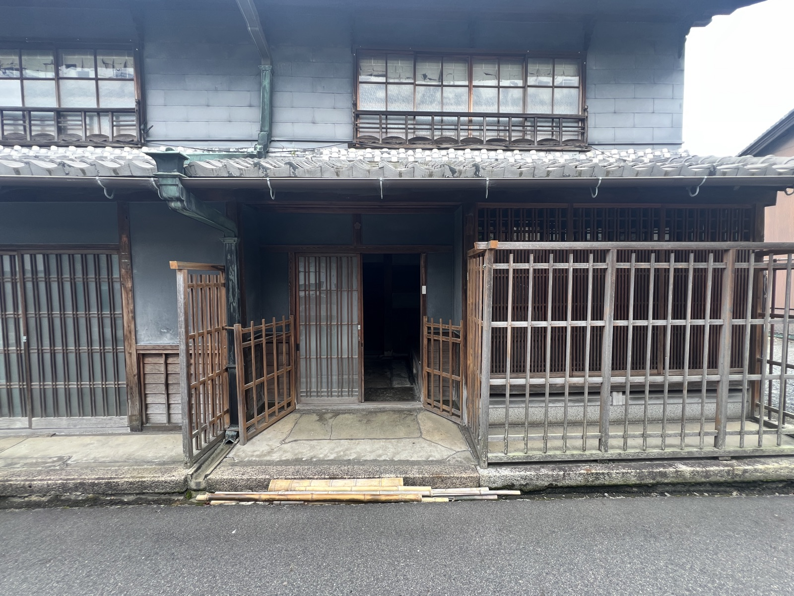
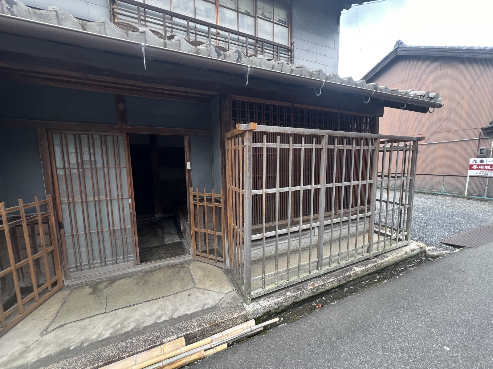
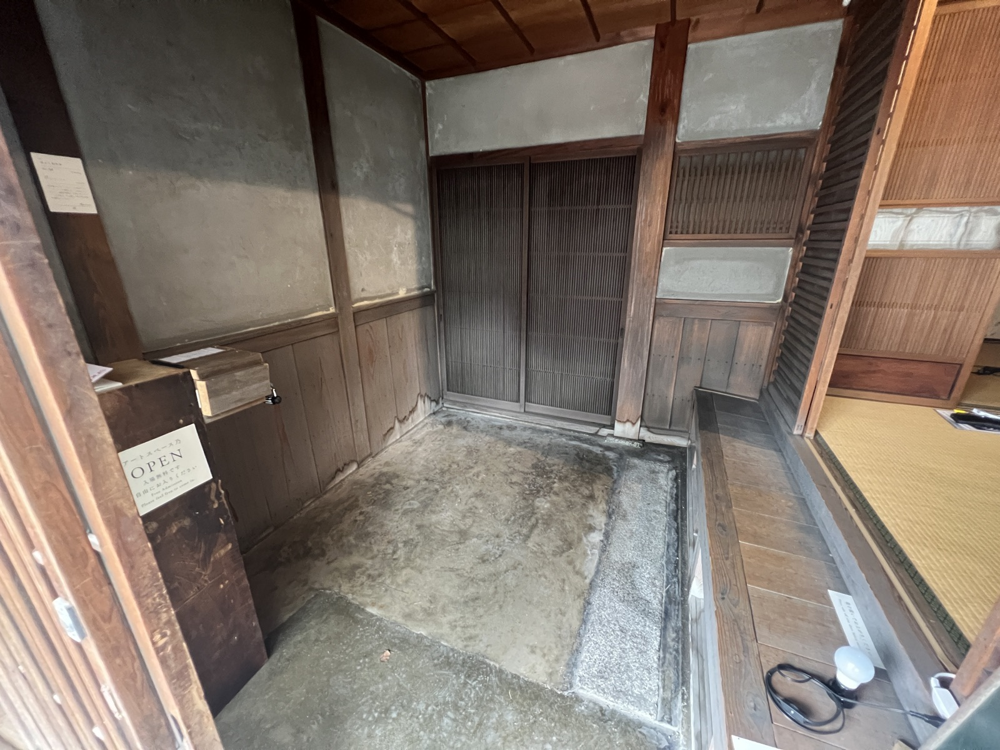
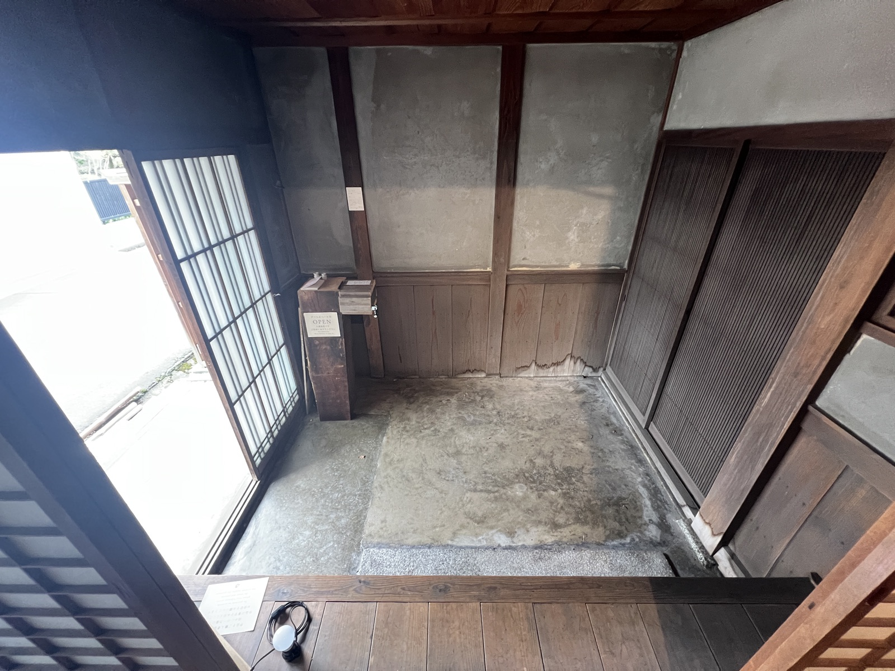
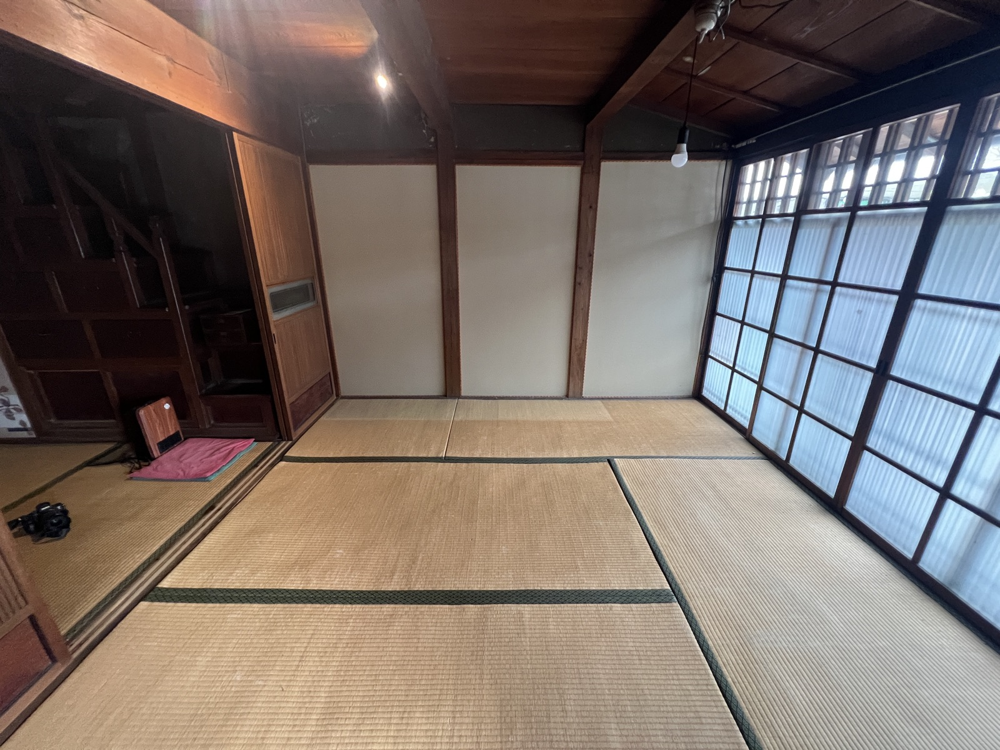
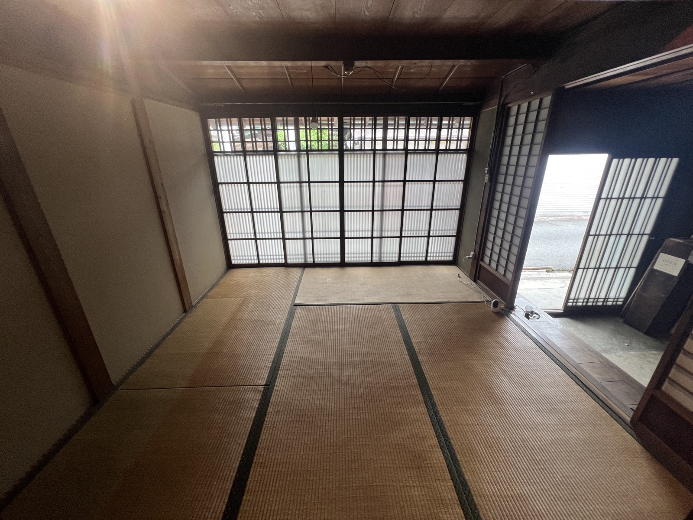
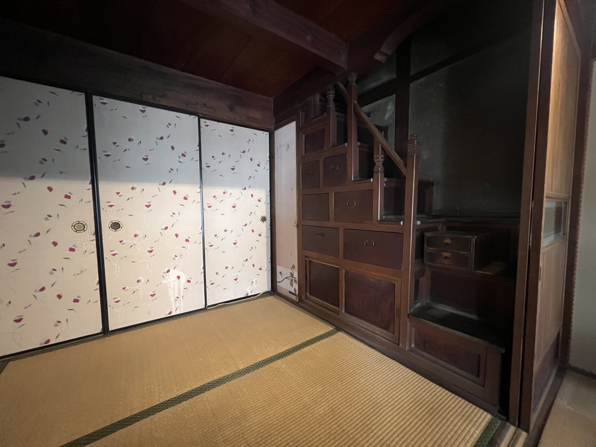
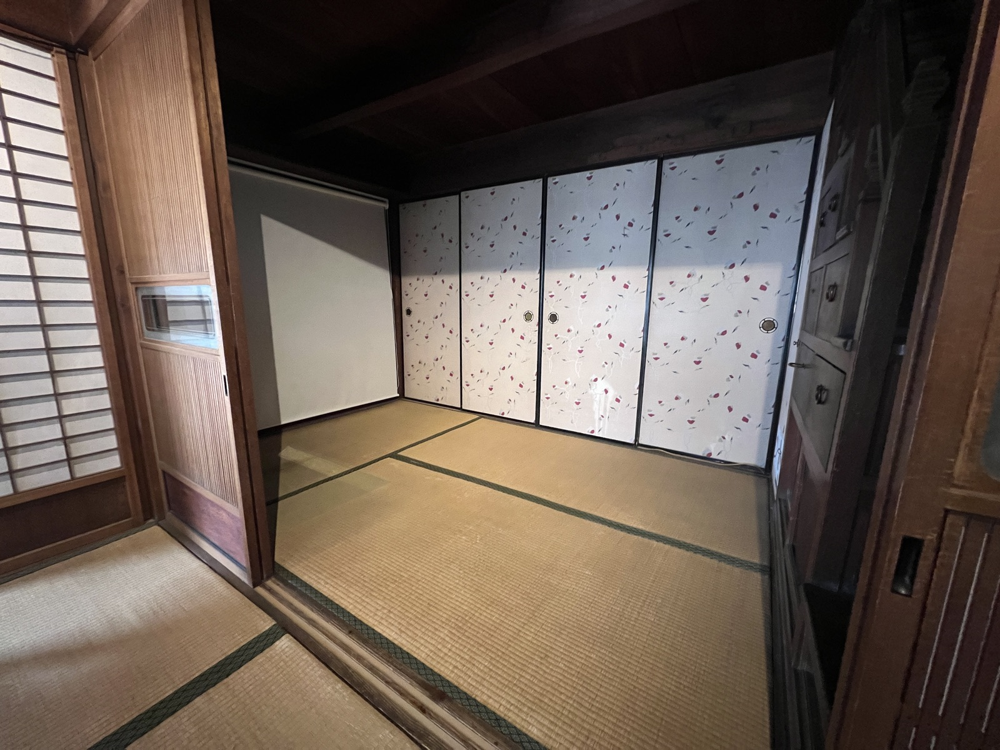
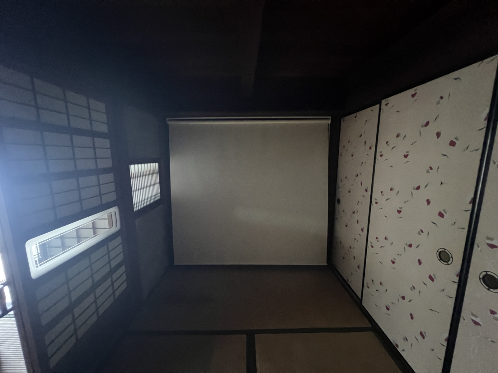

Open Call
公募のお知らせ
乃 -NANJI- では、現在公募を行っています。
伊賀のいとなみと響き合う、新しい企画との出会いをお待ちしています。
Call A ─ Artist
脱衣所スペース｜出展作家 公募
一乃湯の浴室に隣接する 脱衣所スペースで展示を行う作家を募集します。湯上がりの感覚に呼応する作品、銭湯という日常空間に新たな視線を投げかける作品、湯気の手前と向こうをつなぐような作品——その場ならではの体験を作家とともに開いていきます。
※ 脱衣所スペースは現在改装中のため、寸法・設備の詳細仕様は本要項に明記していません。今回の公募は、改装に合わせて準備するもので、応募いただいた方には個別に詳細をお伝えします。
- 会 場
- 一乃湯 脱衣所（三重県伊賀市上野西日南町1762 乃 -NANJI- 隣接）
- 開催スケジュール
- 2026年7月ごろから順次展示開始
次回の作品更新は2027年1月ごろを予定
- 作品入れ替え
- 会期中、作家ご自身の良いタイミングで作品の入れ替えを行うことができます。
※ 入れ替えの際は事前にご連絡ください
- 募集人数
- 平面 3名 ／ 立体 2名 ※ 応募状況により変更の可能性あり
- 作品サイズ
- 平面：90cm角程度以内 ／ 立体：30cm角程度以内
- 出展料
- 無料
- 作品販売
- 会期中の販売可。売上の50%を作家に還元
- 応募締切
- 2026年6月30日（火）
- 結果通知
- 選考後、通過者のみにメールにて通知します
- 選 考
- 乃 -NANJI- 選考委員会
- 主 催
- 乃 -NANJI-
応募資格
- 個人・グループ・年齢・国籍・経験不問
- 銭湯・脱衣所という特殊な環境（湿気・温度変化・人の出入り）を理解し、その場に響く作品を提案できる方
- 設営・撤収にご自身で対応可能な方（運営側もサポートします）
スペースについて
脱衣所スペースは現在改装中です。具体的な寸法・設備仕様（壁面・照明・電源・温湿度環境など）は、応募完了後に個別にご案内します。湿気・温度変化・人の出入り・浴後の身体感覚といった条件を生かす作品をご提案ください。可能であれば、応募前後に現地下見をお勧めします（要予約）。
提出書類
今回は過去作を中心に募集します。展示を希望する作品の詳細をお送りください。
- 履歴書・略歴（A4 1枚程度／フォーマット自由）
- 展示希望作品の詳細
— 作品画像／タイトル／制作年／素材・技法／サイズ／コンセプト・ステートメント
※ サイズは 平面 90cm角程度以内、立体 30cm角程度以内
- 応募動機（A4 1枚程度／脱衣所環境への応答含む）
- 連絡先（氏名・メール・電話）
主催側のサポート
会場貸出（無料）／広報（公式 SNS・note・チラシ印刷の協力）／搬入搬出の補助／設営相談。
その他のサポート内容は採択後に個別に相談します。
Call A ─ Curator
2027年 通年プログラム｜キュレーター 公募
2027年の乃 -NANJI- 本会場の通年プログラムを共に作るキュレーターを募集します。年間を4つのクール（各3ヶ月）に分け、それぞれを別のキュレーターが担当します。テーマ設定・作家選定はキュレーターの裁量。はじめてキュレーションに挑戦する方も歓迎します。
開催スケジュール（4クール／各3ヶ月）
第1クール2027年 2月 〜 4月
第2クール2027年 5月 〜 7月
第3クール2027年 8月 〜 10月
第4クール2027年 11月 〜 2028年 1月
会場風景









01 / 09
- 会 場
- 乃 -NANJI-（三重県伊賀市上野西日南町1762 「一乃湯」向かい）
- 募集枠
- 4枠（1クール＝1キュレーター）
- 企画形態
- 2名以上の作家を集めたグループ展を推奨。個展企画も応相談で可。
- テーマ
- キュレーター裁量。乃 -NANJI- のコンセプト（「日常の集積を、アートに開く。」）と響き合うものを歓迎します。
- 関わり方
- 採択キュレーターは、ディレクター（杉山 仁彦）と話し合いながら進める形を基本としますが、「最終チェック以外は杉山が干渉しない進行」も選択可能。企画規模・内容に応じて柔軟に対応します。
（ディレクターは、主にキュレーションのサポートや最終チェックを行います。）
- 主催側のサポート
- 実務（会場貸出・機材調整）／広報（公式 SNS・note・チラシ印刷）／搬入搬出などをサポート。
その他は要相談。
- 報 酬
- 応相談（企画案の規模・内容・キュレーター経験に応じて個別調整）
- 予算について
- 限られた予算内での運営となります。十分な予算をお出しできない場合が多分にあることを、あらかじめご了承ください。詳細は採択後に個別協議します。
- 応募締切
- 2026年8月31日（月）
- 結果通知
- 選考後、通過者のみにメールにて通知します
- 選 考
- 乃 -NANJI- 選考委員会
- 主 催
- 乃 -NANJI-
こんな方を歓迎
- キュレーションを「制作と地続きの行為」として捉えたい方
- 伊賀という土地・銭湯隣接の場・古民家空間に応答する企画を立てたい方
- 2027年内のいずれかのクールで、企画から完了まで関わる時間を確保できる方
- はじめてキュレーションに挑戦する方も歓迎
提出書類
- 略歴（A4 1枚程度／キュレーション経験があれば記載）
- 企画案（A4 2〜4枚程度）
— タイトル（仮）／テーマ・コンセプト／作家候補（決まっていれば）／空間構成のイメージ／関連企画案／予算規模感
- 希望クール（第1〜第4のうち希望順位を3つまで）
- 過去の活動資料（あれば／キュレーション・制作・執筆・場づくりなど形式問わず）
- 連絡先（氏名・メール・電話）
選考プロセス
- 書類選考（締切後 約3週間）
- 必要に応じてオンライン面談（30分〜1時間）
- 結果通知（通過者のみにメールにて通知／採択者には次のステップをご案内）
- ※ ご相談も受け付けておりますので、お気軽にご連絡ください。